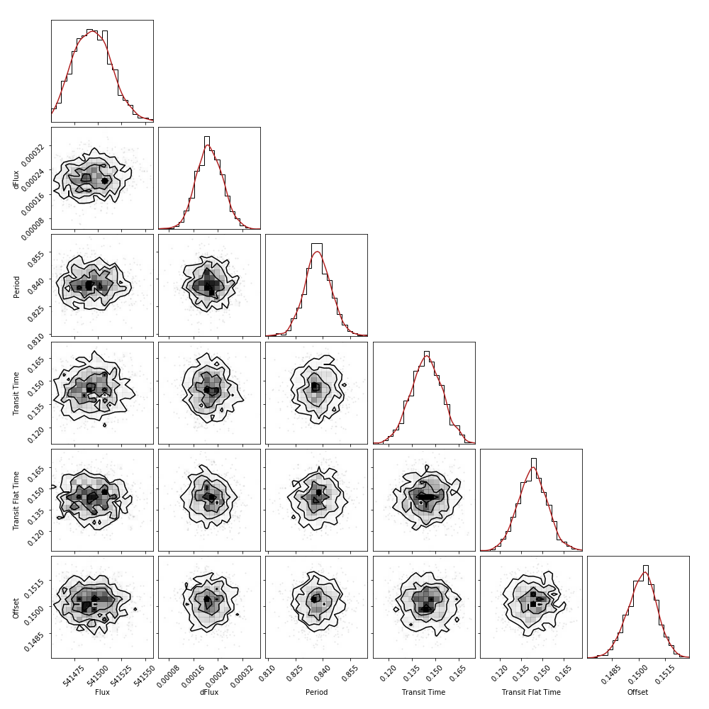

Using emcee and UltraNest to model the light curves from Kepler-10
Kepler-10 is a star located roughly 608 lightyears from Earth. Kepler-10 was targeted by NASA in their search for an Earth-like exoplanet, and in 2011 the first exoplanet orbiting Kepler-10 was discovered. The planet, Kepler-10b, is a rocky planet with 1.4x the radius of Earth, and 3.7x the mass.
As Kepler-10b passes in front of its star, it obstructs some flux (the light energy per unit time per unit area) from the star, casting a shadow towards Earth. We see this as a slight periodic dip in light intesity, occuring every time the exoplanet is infront of its star. Measuring the light curve (flux as a function of time) from a star with an exoplanet is called "transit detection", and can be used to infer the existense of an exoplanet and find the properties of the star-planet system.
In this example, I will create a model describing the flux of a star with, a single orbiting planet, as a function of time. I will then use the "emcee" and "UltraNest" samplers to fit the model parameters to some real Kepler-10 light curve data, provided by NASA.
Useful imports
# numpy
import numpy as np
# scipy
from scipy.special import gammaln, ndtri
from scipy.stats import gaussian_kde
# astropy
from astropy.io import fits
from astropy.table import Table
# plotting
import corner
from matplotlib import pyplot as plt
%matplotlib inline
# samplers
import emcee as mc
import ultranest
import ultranest.stepsampler as stepsampler
print('emcee version: {}'.format(mc.__version__))
print('UltraNest version: {}'.format(ultranest.__version__))
# misc
from time import time as timer
emcee version: 3.0.2
UltraNest version: 2.2.2
Viewing the data
Light curve models can vary from simple square shaped transits, to extremely complicated transits involving limb-darkening and other effects. To decide which model is most appropriate, we need to first see the data we will be using.
The light curve data is in the form of a FITS file. These files can be easily loaded into a Table format (simillar to a Pandas DataFrame) using astropy. The data is quite large, so I chose to look at the first 1325 data points only. Whilst extracting the data, any data points with a flux of "nan" need to be removed from both the "flux" and "time" lists.
table = fits.open("kplr011904151-2010265121752_llc.fits")
tab = table[1]
data = Table(tab.data)
flux_orig = data['PDCSAP_FLUX'][:1325]
time_orig = data['TIME'][:1325]
flux = [flux_orig[i] for i in range(len(flux_orig)) if str(flux_orig[i]) != "nan"]
time = [time_orig[i] for i in range(len(time_orig)) if str(flux_orig[i]) != "nan"]
Now, we can plot the light curve we will be using and decide how complicated our model needs to be. Of the two plots below, the first shows the whole light curve that I'll be using, and the second shows a "zoomed in" segment of the light curve.
fig, (ax1, ax2) = plt.subplots(2, 1, figsize=(15,6))
# plot all useful data
ax1.plot(time, flux, "k:")
ax1.set_ylabel("Flux / e-/s")
# plot zoomed in view of transits
ax2.plot(time, flux, "k:")
ax2.set_ylabel("Flux / e-/s")
ax2.set_xlabel("Time / days")
ax2.set_ylim(541325, 541700)
ax2.set_xlim(540, 545)
plt.suptitle("Kepler-10 light curves showing evidence of exoplanet transits")
plt.show()

The above plot shows regular dips in flux, as expected from exoplanet transits. The dips appear to be "V-shaped", with sloped sides and a flat bottom. This suggests we could use a model of regular trapezium shaped flux drops. However, the slopes are fairly steep, so we could also use a much simpler square shaped flux drop instead. This would save on time, but may come at the cost of accuracy.
The model
Below is a diagram showing which parameters are needed to define a trapezium shaped transit (left), and how I will go about implementing the model in Python (right). I started with a simple recurring step function, then modified the step to have the triangular shape with height "h", which can be calculated using basic trigonometry. Finally, I added a hard floor at a flux change of df, to create the trapezium shape. The square transit shape is simillar, but tt and tf are equal.
Using this, I defined a the function that will be used to model the transit:
def transit(time, f, df, p, tt, tf=None, off=0, square=False):
"""
Flux, from a uniform star source with single orbiting planet, as a function of time
:param time: 1D array, input times
:param f: unobscured flux, max flux level
:param df: ratio of obscured to unobscured flux
:param p: period of planet's orbit
:param tt: total time of transit
:param tf: time during transit in which flux doesn't change
:param off: time offset. A value of 0 means the transit begins immidiately
:param square: If True, the shape of the transit will be square (tt == tf)
:return: 1D array, flux from the star
"""
if tf is None:
tf = tt
if tt <= tf:
# Default to square shaped transit
square = True
y = []
if not square:
# define slope of sides of trapezium
h = f*df*tt/(tt-tf)
grad = 2*h/tt
for i in time:
j = (i + off) % p
if j < tt:
# transit
# square shaped transit
if square:
y.append(f*(1 - df))
# trapezium shaped transit
elif j/tt < 0.5:
# first half of transit
val = f - grad*j
if val < f*(1 - df):
y.append(f*(1 - df))
else:
y.append(val)
else:
# last half of transit
val = (grad*j) - 2*h + f
if val < f*(1 - df):
y.append(f*(1 - df))
else:
y.append(val)
else:
# no transit
y.append(f)
return y
I'll be using both a trapezium and square shape transit in tandem throughout this example, and I'll compare the performance and accuracies of both models.
Modelling with emcee
Now that we know the parameters that will describe the model, we can start guessing at the parameter priors by using the plots above. Due to the noise, I'll use a uniform prior on f, but a normal prior on other parameters. Since the square transit model does not require the "tf" parameter, we can omit it from the list of square transit priors for a little extra time save. This model is quite complicated with six parameters, and eyeballing the values of each parameter can be tricky. Using a little trial and error, I came up with the following guesses:
# uniform prior on flux
f_min = 4.9
f_max = 5.8
# normal prior on flux drop
df_mu = 0.19
df_sig = 0.005
# normal prior on period
p_mu = 0.8372
p_sig = 0.008
# normal prior on total transit time
tt_mu = 0.145
tt_sig = 0.01
# normal prior on flat transit time
tf_mu = 0.143
tf_sig = 0.01
# normal prior on offset
off_mu = 0.1502
off_sig = 0.0008
priors = [(f_min, f_max), (df_mu, df_sig), (p_mu, p_sig),
(tt_mu, tt_sig), (tf_mu, tf_sig), (off_mu, off_sig)]
# remove tf for square transit parameters
priors_square = priors[:4] + priors[5:]
Sampling the data
The "emcee" sampler requires the user to provide a prior, likelihood, and posterior function, all in their log forms. These functions are very simillar for the trapezium and square shaped transit models; the key difference being the "tf" parameter is omitted for the square model. Since I decided on using normal and uniform priors for each parameter, The log of the prior takes the following forms:
def logprior(theta):
"""
Function to return the log of the prior for a trapezium shaped transit light curve model
:param theta: tuple or list containing each parameter
"""
lprior = 0
for i in range(len(priors)):
# sum log priors from each parameter
if i == 0:
# prior for uniform parameters
if priors[i][0] < theta[i] < priors[i][1]:
pass
else:
lprior = -np.inf
else:
# prior for non-uniform parameters
lprior -= 0.5*((theta[i] - priors[i][0]) / priors[i][1])**2
return lprior
def logprior_square(theta):
"""
Function to return the log of the prior for a square shaped transit light curve model
:param theta: tuple or list containing each parameter
"""
lprior = 0
for i in range(len(priors_square)):
# sum log priors from each parameter
if i == 0:
# prior for uniform parameters
if priors_square[i][0] < theta[i] < priors_square[i][1]:
pass
else:
lprior = -np.inf
else:
# prior for non-uniform parameters
lprior -= 0.5*((theta[i] - priors_square[i][0]) / priors_square[i][1])**2
return lprior
The likelihood takes the form of a Poisson distribution, since flux is a non-negative quantity. The expected value of the likelihood "lmbda" is found using the "transit" function defined above.
def loglike(theta):
"""
Function to return the log likelihood of the trapezium shpaed transit light curve model
:param theta: tuple or list containing each parameter
:param obs: list or array containing the observed flux of each data point
:param times: list or array containing the times at which each data point is recorded
"""
# unpack parameters
f_like, df_like, p_like, tt_like, tf_like, off_like = theta
# expected value
lmbda = np.array(transit(time, f_like, df_like, p_like, tt_like, tf_like, off=off_like))
n = len(flux)
a = np.sum(gammaln(np.array(flux)+1))
b = np.sum(np.array(flux) * np.log(lmbda))
return -np.sum(lmbda) - a + b
def loglike_square(theta):
"""
Function to return the log likelihood of the square shpaed transit light curve model
:param theta: tuple or list containing each parameter
:param obs: list or array containing the observed flux of each data point
:param times: list or array containing the times at which each data point is recorded
"""
# unpack parameters
f_like, df_like, p_like, tt_like, off_like = theta
# expected value
lmbda = np.array(transit(time, f_like, df_like, p_like, tt_like, off=off_like, square=True))
n = len(flux)
a = np.sum(gammaln(np.array(flux)+1))
b = np.sum(np.array(flux) * np.log(lmbda))
return -np.sum(lmbda) - a + b
When using MCMC, the log posterior can be found as the sum of the log prior and log likelihood:
def logposterior(theta):
lprior = logprior(theta)
# check log prior is finite
if not np.isfinite(lprior):
return -np.inf
return lprior + loglike(theta)
def logposterior_square(theta):
lprior = logprior_square(theta)
# check log prior is finite
if not np.isfinite(lprior):
return -np.inf
return lprior + loglike_square(theta)
Next, we can start setting up the MCMC model. To start, I'll draw 200 "ensemble" samples from each prior distribution, which will be used to represent the priors. I'll also define 500 "burn-in" iterations to allow the chain to converge, and 500 further iterations to produce the posteriors.
# no. ensemble points
Nens = 200
inisamples = []
for i in range(len(priors)):
if i == 0:
inisamples.append(np.random.uniform(priors[i][0], priors[i][1],Nens))
else:
inisamples.append(np.random.normal(priors[i][0], priors[i][1],Nens))
inisamples = np.array(inisamples).T
inisamples_square = []
for i in range(len(priors_square)):
if i == 0:
inisamples_square.append(np.random.uniform(priors_square[i][0], priors_square[i][1],Nens))
else:
inisamples_square.append(np.random.normal(priors_square[i][0], priors_square[i][1],Nens))
inisamples_square = np.array(inisamples_square).T
ndims = inisamples.shape[1]
ndims_square = inisamples_square.shape[1]
# no. iterations
Nburn = 500
Nsamples = 500
loglike.ncalls = 0
loglike_square.ncalls = 0
Now that everything is set up, we can perform the sampling process:
sampler = mc.EnsembleSampler(Nens, ndims, logposterior)
sampler_square = mc.EnsembleSampler(Nens, ndims_square, logposterior_square)
# perform sampling
t0 = timer()
sampler.run_mcmc(inisamples, Nsamples+Nburn)
t1 = timer()
print("time taken to sample a trapezium transit model with emcee: {} seconds".format(t1-t0))
sampler_square.run_mcmc(inisamples_square, Nsamples+Nburn)
t2 = timer()
print("time taken to sample a square transit model with emcee: {} seconds".format(t2-t1))
time taken to sample a trapezium transit model with emcee: 22.782975673675537 seconds
time taken to sample a square transit model with emcee: 19.97200083732605 seconds
The burn-in points can be removed before collecting the chains as follows:
samples_trapez = sampler.chain[:, Nburn:, :].reshape((-1, ndims))
samples_square = sampler_square.chain[:, Nburn:, :].reshape((-1, ndims_square))
Results
Let's take a look at what we found. Looking at the trapezium model, we can plot the posteriors of each parameter, along with contour plots describing how one parameter may vary with any other. This can be done using "corner.py", and a scipy Gaussian KDE function.
def plotposts(samples, labels, **kwargs):
fig = corner.corner(samples, labels=labels, hist_kwargs={'density': True}, **kwargs)
pos = [i*(len(labels)+1) for i in range(len(labels))]
for axidx, samps in zip(pos, samples.T):
kde = gaussian_kde(samps)
xvals = fig.axes[axidx].get_xlim()
xvals = np.linspace(xvals[0], xvals[1], 50)
fig.axes[axidx].plot(xvals, kde(xvals), color='firebrick')
labels = ['Flux', 'dFlux', 'Period', 'Transit Time', 'Transit Flat Time', 'Offset']
plotposts(samples_trapez, labels)

For each model, we can find the mean and standard deviation of each parameter using the traces. For the trapezium transit model:
f, ferr = np.mean(samples_trapez[:,0]), np.std(samples_trapez[:,0])
df, dferr = np.mean(samples_trapez[:,1]), np.std(samples_trapez[:,1])
p, perr = np.mean(samples_trapez[:,2]), np.std(samples_trapez[:,2])
tt, tterr = np.mean(samples_trapez[:,3]), np.std(samples_trapez[:,3])
tf, tferr = np.mean(samples_trapez[:,4]), np.std(samples_trapez[:,4])
off, offerr = np.mean(samples_trapez[:,5]), np.std(samples_trapez[:,5])
print("Parameters describing a trapezium shaped transit model: \n \n" +
" unobstructed flux = {} \u00B1 {} e-/s \n".format(f,ferr) +
"fractional flux decrease = {} \u00B1 {} \n".format(df,dferr) +
" period = {} \u00B1 {} days \n".format(p,perr) +
" total transit time = {} \u00B1 {} days \n".format(tt,tterr) +
" flat transit time = {} \u00B1 {} days \n".format(tf,tferr) +
" offset = {} \u00B1 {} days \n".format(off,offerr))
Parameters describing a trapezium shaped transit model:
unobstructed flux = 541508.1852844431 36.9344420907229 e-/s
fractional flux decrease = 0.00024461083692660444 3.7035342916871527e-06
period = 0.8370801841354675 0.008002462715920132 days
total transit time = 0.14446313515960185 0.010012520942390852 days
flat transit time = 0.14221868661500203 0.010486564635702324 days
offset = 0.1501856219851231 0.000792190343252601 days
The same can be done for the square transit model:
f_square, ferr_square = np.mean(samples_square[:,0]
), np.std(samples_square[:,0])
df_square, dferr_square = np.mean(samples_square[:,1]
), np.std(samples_square[:,1])
p_square, perr_square = np.mean(samples_square[:,2]), np.std(samples_square[:,2])
tt_square, tterr_square = np.mean(samples_square[:,3]), np.std(samples_square[:,3])
off_square, offerr_square = np.mean(samples_square[:,4]), np.std(samples_square[:,4])
print("Parameters describing a square shaped transit model: \n \n" +
" unobstructed flux = {} \u00B1 {} e-/s \n".format(f_square,ferr_square) +
"fractional flux decrease = {} \u00B1 {} \n".format(df_square,dferr_square) +
" period = {} \u00B1 {} days \n".format(p_square,perr_square) +
" total transit time = {} \u00B1 {} days \n".format(tt_square,tterr_square) +
" offset = {} \u00B1 {} days \n".format(off_square,offerr_square))
Parameters describing a square shaped transit model:
unobstructed flux = 541509.5710077788 38.29278598182498 e-/s
fractional flux decrease = 0.00024373683466889182 3.7647641082140636e-06
period = 0.8372673158389097 0.008000578546054328 days
total transit time = 0.14409081829513087 0.010074301386211069 days
offset = 0.1501740077644908 0.00081315394152917 days
The period in both cases is around 20 hours. This is unique to one body in the Kepler-10 system: Our model describes the transits of Kepler-10b.
Plotting the posterior
We can sample from the posteriors further to create slightly different sets of the parameters. From this, we can plot a new line over our original data, creating a posterior predictive plot. The regions in which the model is most likely to fall in will appear darker on the plot, and so the darker the plot, the higher the probabillity of the flux passing through it.
Start by randomly choosing 400 of each parameter for the trapezium and square models:
n_fits = 400
fsamps_trap_emcee = np.random.choice(samples_trapez[:,0],n_fits)
dfsamps_trap_emcee = np.random.choice(samples_trapez[:,1],n_fits)
psamps_trap_emcee = np.random.choice(samples_trapez[:,2],n_fits)
ttsamps_trap_emcee = np.random.choice(samples_trapez[:,3],n_fits)
tfsamps_trap_emcee = np.random.choice(samples_trapez[:,4],n_fits)
offsamps_trap_emcee = np.random.choice(samples_trapez[:,5],n_fits)
fsamps_square_emcee = np.random.choice(samples_square[:,0],n_fits)
dfsamps_square_emcee = np.random.choice(samples_square[:,1],n_fits)
psamps_square_emcee = np.random.choice(samples_square[:,2],n_fits)
ttsamps_square_emcee = np.random.choice(samples_square[:,3],n_fits)
offsamps_square_emcee = np.random.choice(samples_square[:,4],n_fits)
Below are two plots of the results of the MCMC algorithm. The first shows the entire original light curve data set, with a model with mean parameters plotted on top. The second shows a "zoomed in" view of a few exoplanet transits, with the posterior predictive overplotted.
fig, (ax1, ax2) = plt.subplots(2, 1, figsize=(15,6))
# mean plot
ax1.plot(time, flux, "k:", linewidth=3)
x = np.linspace(min(time), max(time), 1500)
y = transit(x,f,df,p,tt,tf,off)
ax1.plot(x, y, "b-", alpha=0.8)
ax1.set_ylabel("Flux / e-/s")
# posterior predictive plot
for i in range(n_fits):
y = transit(x, fsamps_trap_emcee[i], dfsamps_trap_emcee[i], psamps_trap_emcee[i],
ttsamps_trap_emcee[i], tfsamps_trap_emcee[i], offsamps_trap_emcee[i])
ax2.plot(x, y, "b-", alpha=0.01, linewidth=5)
ax2.plot(time, flux, "k:", linewidth=3)
ax2.set_ylabel("Flux / e-/s")
ax2.set_xlabel("Time / days")
ax2.set_ylim(541300, 541600)
ax2.set_xlim(540, 545)
plt.suptitle("A light curve from Kepler-10 with overplotted" +
" mean trapezium transit model (top) and posterior predictive plot (bottom)")
plt.show()

The same process can be repeated for the square transit model:
fig, (ax1, ax2) = plt.subplots(2, 1, figsize=(15,6))
# mean plot
ax1.plot(time, flux, "k:", linewidth=3)
x = np.linspace(min(time), max(time), 1500)
y = transit(x,f_square,df_square,p_square,tt_square,off=off_square)
ax1.plot(x, y, "b-", alpha = 0.8)
ax1.set_ylabel("Flux / e-/s")
# posterior predictive plot
for i in range(n_fits):
y = transit(x, fsamps_square_emcee[i], dfsamps_square_emcee[i], psamps_square_emcee[i],
ttsamps_square_emcee[i], off=offsamps_square_emcee[i])
ax2.plot(x, y, "b-", alpha=0.01, linewidth=5)
ax2.plot(time, flux, "k:", linewidth=3)
ax2.set_ylabel("Flux / e-/s")
ax2.set_xlabel("Time / days")
ax2.set_ylim(541300, 541600)
ax2.set_xlim(540, 545)
plt.suptitle("A light curve from Kepler-10 with overplotted" +
" mean square transit model (top) and posterior predictive plot (bottom)")
plt.show()
From the posterior predictive plots, it seems that both models explain the data fairly well. The trapezium model seems like it follows the data a little closer, but I won't dismiss the square transit model just yet. To decide which model best describes the data, we can see which best predicts properties of the Kepler-10 system.
Model comparisons
Now that we have the mean values for each parameter, we can start to infer information about the star-planet system the model describes. I'll use both models for this, and find out which model predicts the properties the system with the greatest accuracy. For the derivations on equations for the following calculations, check out this paper. For each property, I'll state the most accpeted values found here.
The first property we can find is the ratio of the planet radius "Rp" and star radius "Rs". This is simply the square root of the mean flux drop:
RpRs, RpRs_err = np.sqrt(df), dferr/(np.sqrt(df))
RpRs_square, RpRs_square_err = np.sqrt(df_square), dferr_square/(np.sqrt(df_square))
print("Planet to star radius ratio (trapezium transit model): {} \u00B1 {}".format(RpRs, RpRs_err))
print("Planet to star radius ratio (square transit model): {} \u00B1 {}".format(
RpRs_square, RpRs_square_err))
print("Accepted planet to star radius ratio: {}".format(0.0127))
Planet to star radius ratio (trapezium transit model): 0.01564003954363941 0.00023679826904231388
Planet to star radius ratio (square transit model): 0.015612073362269722 0.00024114440285122598
Accepted planet to star radius ratio: 0.0127
Both models are in close agreement with each other, and are quite close to the accepted value of the planet to star radius ratio (to within the same order of magnitude). We only used a handful of transits, and under one month of data, so the difference between predicted and accepted ratios here are acceptable. Sampling with the entire dataset instead of the shortened data I used does not improve this estimate.
Next, we can attempt to find incination angle "I", usually defined as the angle between the plane of a celestial body's orbit and the plane that is normal to the line of sight from Earth. This isn't quite possible for the square model, due to the total transit and flat transit times being equal. To account for this, I'll instead say the flat transit time is 99% of the total transit time, just to keep everything finite.
tf_square, tferr_square = 0.99*tt_square, 0.99*tterr_square
The calculations become pretty complex here, and error propagation becomes difficult. Instead, I'll approximate the errors, as we're mostly interested in the relative errors between the two models anyway. To begin, we start by approximating the semi-minor axis "b", and the normalised semi-major axis "aRs" as below:
def semiminor(df,tt,tf):
# return semi-minor axis, given model parameters
numerator = (tt**2)*(1-np.sqrt(df))**2 - (tf**2)*(1+np.sqrt(df))**2
denominator = tt**2 - tf**2
return np.sqrt(numerator / denominator)
def normsemimajor(df,p,tt,tf):
# return normalised semi-major axis, given model parameters
numerator = 2*p*(df)**(1/4)
denominator = np.pi*np.sqrt(tt**2 - tf**2)
return numerator / denominator
# semiminor for trapezium model
b_trap = semiminor(df, tt, tf)
b_trap_err = abs(semiminor(df + dferr, tt, tf) - b_trap)
# semiminor for square model
b_square = semiminor(df_square, tt_square, tf_square)
b_square_err = abs(semiminor(df_square + dferr_square, tt_square, tf_square) - b_square)
# semimajor for trapezium model
aRs_trap = normsemimajor(df, p, tt, tf)
aRs_trap_err = abs(normsemimajor(df+dferr,p+perr,tt+tterr,tf+tferr) - aRs_trap)
# semimajor for square model
aRs_square = normsemimajor(df_square, p_square, tt_square, tf_square)
aRs_square_err = abs(normsemimajor(df_square+dferr_square,p_square+perr_square,
tt_square+tterr_square,tf_square+tferr_square) - aRs_square)
print("Normalised semi-major axis (trapezium transit model): {} \u00B1 {}".format(aRs_trap,
aRs_trap_err))
print("Normalised semi-major axis (square transit model): {} \u00B1 {}".format(aRs_square,
aRs_square_err))
print("Accepted normalised semi-major axis: {}".format(3.40))
Normalised semi-major axis (trapezium transit model): 3.11343439016216 0.24897493968215692
Normalised semi-major axis (square transit model): 3.38730776154764 0.11671862724332449
Accepted normalised semi-major axis: 3.4
The ratio of semi-minor axis to normalised semi-major axis gives the cosine of the inclination angle of Kepler-10b. Therefore, the predictions of the inclination from both models are as follows:
I_trap = np.arccos(b_trap/aRs_trap) * (180/np.pi)
I_trap_err = abs(np.arccos((b_trap+b_trap_err)/(aRs_trap-aRs_trap_err)) * (180/np.pi) - I_trap)
I_square = np.arccos(b_square/aRs_square) * (180/np.pi)
I_square_err = abs(np.arccos((b_square+b_square_err)/(aRs_square-aRs_square_err)
) * (180/np.pi) - I_square)
print("Inclination angle (trapezium transit model): {} \u00B1 {} degrees".format(I_trap,I_trap_err))
print("Inclination angle (square transit model): {} \u00B1 {} degrees".format(I_square,I_square_err))
print("Accepted inclination angle: {} degrees".format(84.4))
Inclination angle (trapezium transit model): 81.68965145311803 0.9307232291459115 degrees
Inclination angle (square transit model): 83.21823835267094 0.5963780613143967 degrees
Accepted inclination angle: 84.4 degrees
An inclination of 90 degrees means that the planet orbits parallel to the line of sight from Earth. Again, both models make a decent attempt estimating the inclination, however the square transit shape is a little more accurate, and has a smaller uncertainty. This might suggest the square transit model might actually be a little better for this data.
Finally, we can attempt to predict the density of the star, Kepler-10. This makes the assumption that the radius of the star is much bigger than the radius of the planet. Since we measured the ratio of planet to star radii to be around 0.015, this assumption is pretty reasonable.
The star density can be calculated using the semi-major and semi-minor axes, along with some other parameters from the models:
def star_density(df,p,tt,aRs):
# return density of star given model parameters
G = 6.67408e-11
wt = tt*np.pi/p
# transform p from days to seconds
p *= 86400
numerator = 3*np.pi*aRs**3
denominator = G*p**2
return numerator / denominator
# star density predicted by trapezium model
stard_trap = star_density(df,p,tt,aRs_trap)
stard_trap_err = abs(star_density(df+dferr,p-perr,tt-tterr,aRs_trap+aRs_trap_err) - stard_trap)
# star density predicted by square model
stard_square = star_density(df_square,p_square,tt_square,aRs_square)
stard_square_err = abs(star_density(df_square+dferr_square,p_square-perr_square,tt_square-tterr_square,
aRs_square+aRs_square_err) - stard_square)
print("Star density (trapezium transit model): {} \u00B1 {} kg/m\u00b3".format(stard_trap,
stard_trap_err))
print("Star density (square transit model): {} \u00B1 {} kg/m\u00b3".format(stard_square,
stard_square_err))
print("True star density: {} kg/m\u00b3".format(1070))
Star density (trapezium transit model): 964.774196469593 100.61863106968042 kg/m
Star density (square transit model): 1048.78853195487 79.23816897368705 kg/m
True star density: 1070 kg/m
This shows that not only does a square transit shape predict the density of the star remarkably well, it also has a slightly lower fractional uncertainty on it's estimate compared to the trapezium shaped transit. A reason for this may be that Kepler-10 is around the same size as the Sun, and Kepler-10b is actually larger than Earth, yet the planet is only infront of its star for only 3 hours. This means the planet has to be travelling fast, resulting in very steep slopes on the trapezium transit light curve. It seems involving the extra "tf" parameter only serves to complicate the model and add uncertainty when using a square wave is just as good, as is proven above.
Modelling with UltraNest
If we want a more definitive way of determining which model better desribes the observed data, we'll need to find the Bayes factor, which requires the marginalised likelihoods for the trapezium and square transit shapes. We can do this using the "UltraNest" nested sampling package.
Sampling the data
This works in a simillar way to emcee, in fact we can use the same likelihood functions defined earlier, however we do have to create a new prior function. UltraNest samples from a unit hypercube parameter space, and so the prior function must transform the parameters back into their true space. The two functions below show how this is done using scipy's inverse error function "ndtri":
def prior_transform(theta):
"""
Transforms parameters from a unit hypercube space to their true space
for a trapezium transit model
"""
params = [0 for i in range(len(theta))]
for i in range(len(theta)):
if i == 0:
# uniform transform for f
params[i] = (priors[i][1]-priors[i][0])*theta[i] + priors[i][0]
else:
# normal transform for remaining parameters
params[i] = priors[i][0] + priors[i][1]*ndtri(theta[i])
return np.array(params)
def prior_transform_square(theta):
"""
Transforms parameters from a unit hypercube space to their true space
for a square transit model
"""
params = [0 for i in range(len(theta))]
for i in range(len(theta)):
if i == 0:
# uniform transform for f
params[i] = (priors_square[i][1]-priors_square[i][0]
)*theta[i] + priors_square[i][0]
else:
# normal transform for remaining parameters
params[i] = priors_square[i][0] + priors_square[i][1]*ndtri(theta[i])
return np.array(params)
We can now create a model for both the trapezium and square transit shapes. Since there are up to 6 parameters in a model, the UltraNest sampler may struggle to perform. To solve this, use a slice sampler as is shown below:
# initialise samplers
sampler = ultranest.ReactiveNestedSampler(['f', 'df','p','tt','tf','off'],
loglike, prior_transform)
sampler_square = ultranest.ReactiveNestedSampler(['f', 'df','p','tt','off'],
loglike_square, prior_transform_square)
# use "slice" sampler, due to high dimensionality
nsteps = 2*len(priors)
sampler.stepsampler = stepsampler.RegionSliceSampler(nsteps=nsteps)
sampler_square.stepsampler = stepsampler.RegionSliceSampler(nsteps=nsteps)
# define live points and stopping criterion
nlive = 400
stop = 0.5
# run the samplers
t0 = timer()
results_trap = sampler.run(min_num_live_points=nlive)
t1 = timer()
results_square = sampler_square.run(min_num_live_points=nlive)
t2 = timer()
print('\n \n'+
'Time taken to sample trapezium shaped model with UltraNest: {} seconds'.format(t1-t0))
print('Time taken to sample square shaped model with UltraNest: {} seconds'.format(t2-t1))
[ultranest] Sampling 400 live points from prior ...
VBox(children=(HTML(value=''), GridspecLayout(children=(HTML(value="<div style='background-color:#6E6BF4;'>&nb
[ultranest] Explored until L=-3e+02 .17 [-273.5034..-273.5033]*| it/evals=2795/188281 eff=1.4876% N=400
[ultranest] Likelihood function evaluations: 188565
[ultranest] logZ = -275.8 +- 0.0255
[ultranest] Effective samples strategy satisfied (ESS = 2007.1, need >400)
[ultranest] Posterior uncertainty strategy is satisfied (KL: 0.46+-0.06 nat, need <0.50 nat)
[ultranest] Evidency uncertainty strategy is satisfied (dlogz=0.07, need <0.5)
[ultranest] logZ error budget: single: 0.04 bs:0.03 tail:0.01 total:0.03 required:<0.50
[ultranest] done iterating.
[ultranest] Sampling 400 live points from prior ...
VBox(children=(HTML(value=''), GridspecLayout(children=(HTML(value="<div style='background-color:#6E6BF4;'>&nb
[ultranest] Explored until L=-3e+02 .21 [-273.4930..-273.4929]*| it/evals=2798/184875 eff=1.5167% N=400
[ultranest] Likelihood function evaluations: 184875
[ultranest] logZ = -275.8 +- 0.03241
[ultranest] Effective samples strategy satisfied (ESS = 2008.9, need >400)
[ultranest] Posterior uncertainty strategy is satisfied (KL: 0.45+-0.11 nat, need <0.50 nat)
[ultranest] Evidency uncertainty strategy is satisfied (dlogz=0.06, need <0.5)
[ultranest] logZ error budget: single: 0.04 bs:0.03 tail:0.01 total:0.03 required:<0.50
[ultranest] done iterating.
Time taken to sample trapezium shaped model with UltraNest: 45.595500469207764 seconds
Time taken to sample square shaped model with UltraNest: 40.1266610622406 seconds
Results
To retrieve the traces from a nested sampler, you must resample according the some weights which are produced during the sampling. I'll only do this for the trapezium model for now, just to keep the code from getting too cluttered:
samples_points_trap = np.array(results_trap["weighted_samples"]["points"])
weights_trap = np.array(results_trap["weighted_samples"]["weights"])
resample_trap = np.random.rand(len(weights_trap)) < weights_trap/max(weights_trap)
samples_trap_ultra = samples_points_trap[resample_trap, :]
The mean parameter values and their errors can be found easily:
# parameter means and errors for trapezium transit
f_trap_ultra, ferr_trap_ultra = np.mean(samples_trap_ultra[:,0]
), np.std(samples_trap_ultra[:,0])
df_trap_ultra, dferr_trap_ultra = np.mean(samples_trap_ultra[:,1])
), np.std(samples_trap_ultra[:,1])
p_trap_ultra, perr_trap_ultra = np.mean(samples_trap_ultra[:,2]
), np.std(samples_trap_ultra[:,2])
tt_trap_ultra, tterr_trap_ultra = np.mean(samples_trap_ultra[:,3]
), np.std(samples_trap_ultra[:,3])
tf_trap_ultra, tferr_trap_ultra = np.mean(samples_trap_ultra[:,4]
), np.std(samples_trap_ultra[:,4])
off_trap_ultra, offerr_trap_ultra = np.mean(samples_trap_ultra[:,5]
), np.std(samples_trap_ultra[:,5])
print("Parameters describing a trapezium shaped transit model from UltraNest: \n \n" +
" unobstructed flux = {} \u00B1 {} e-/s \n".format(f_trap_ultra,ferr_trap_ultra) +
"fractional flux decrease = {} \u00B1 {} \n".format(df_trap_ultra,dferr_trap_ultra) +
" period = {} \u00B1 {} days \n".format(p_trap_ultra,perr_trap_ultra) +
" total transit time = {} \u00B1 {} days \n".format(tt_trap_ultra,tterr_trap_ultra) +
" flat transit time = {} \u00B1 {} days \n".format(tf_trap_ultra,tferr_trap_ultra) +
" offset = {} \u00B1 {} days \n".format(off_trap_ultra,offerr_trap_ultra))
Parameters describing a trapezium shaped transit model from UltraNest:
unobstructed flux = 541506.0367278325 38.07219702378676 e-/s
fractional flux decrease = 0.0002456676060063817 3.5643330145173593e-06
period = 0.8376992378349714 0.007805962818414923 days
total transit time = 0.14467439301959553 0.010237468121439578 days
flat transit time = 0.14315067160042744 0.009933449672703609 days
offset = 0.15020443219136784 0.0008319592417544441 days
Plotting the posterior
We can make the same posterior plots as with emcee, for the sake of comparison. The samples for the posterior predictive plot can be collected as follows:
nfits = 400
# samples for trapezium transit posterior predictive plot
fsamps_trap_ultra = np.random.choice(samples_trap_ultra[:,0],nfits)
dfsamps_trap_ultra = np.random.choice(samples_trap_ultra[:,1],nfits)
psamps_trap_ultra = np.random.choice(samples_trap_ultra[:,2],nfits)
ttsamps_trap_ultra = np.random.choice(samples_trap_ultra[:,3],nfits)
tfsamps_trap_ultra = np.random.choice(samples_trap_ultra[:,4],nfits)
offsamps_trap_ultra = np.random.choice(samples_trap_ultra[:,5],nfits)
Below are three plots. The first two plots show the mean posterior plot and the posteroir predictive plot respectively, produced by UltraNest. The third shows the posterior predictive plot from UltraNest, with the posterior predictive plot from emcee overplotted:
fig, (ax1, ax2, ax3) = plt.subplots(3, 1, figsize=(15,10))
# mean plot
ax1.plot(time, flux, "k:", linewidth=3)
x = np.linspace(min(time), max(time), 1500)
y = transit(x,f_trap_ultra,df_trap_ultra,p_trap_ultra,
tt_trap_ultra,tf_trap_ultra,off_trap_ultra)
ax1.plot(x, y, "b-", alpha=0.8)
ax1.set_ylabel("Flux / e-/s")
ax1.set_title("UltraNest mean posterior plot")
# posterior predictive plot
for i in range(n_fits):
y = transit(x, fsamps_trap_ultra[i], dfsamps_trap_ultra[i], psamps_trap_ultra[i],
ttsamps_trap_ultra[i], tfsamps_trap_ultra[i], offsamps_trap_ultra[i])
ax2.plot(x, y, "b-", alpha=0.01, linewidth=5)
ax2.plot(time, flux, "k:", linewidth=3)
ax2.set_ylabel("Flux / e-/s")
ax2.set_title("UltraNest posterior predictive plot")
ax2.set_ylim(541300, 541600)
ax2.set_xlim(540, 545)
# emcee and UltraNest overlapping posterior predictive plot
for i in range(n_fits):
y_ultra = transit(x, fsamps_trap_ultra[i], dfsamps_trap_ultra[i], psamps_trap_ultra[i],
ttsamps_trap_ultra[i], tfsamps_trap_ultra[i], offsamps_trap_ultra[i])
y_emcee = transit(x, fsamps_trap_emcee[i], dfsamps_trap_emcee[i], psamps_trap_emcee[i],
ttsamps_trap_emcee[i], tfsamps_trap_emcee[i], offsamps_trap_emcee[i])
ax3.plot(x, y_ultra, 'b-', alpha=0.008, linewidth=5,
label='UltraNest' if i == 0 else '')
ax3.plot(x, y_emcee, 'r-', alpha=0.008, linewidth=5,
label='emcee' if i == 0 else '')
ax3.plot(time, flux, 'k:', linewidth=3)
ax3.set_ylabel('Flux / e-/s')
ax3.set_xlabel('Time / days')
ax3.set_title('emcee (red) and UltraNest (blue) overlayed posterior predictive plots')
ax3.set_ylim(541300, 541600)
ax3.set_xlim(540, 545)
leg = ax3.legend(loc='lower right')
for lh in leg.legendHandles:
lh.set_alpha(0.8)
plt.suptitle('A light curve from Kepler-10 with overplotted' +
' mean trapezium transit model (top) and posterior predictive plot (bottom)')
plt.show()

Model comparisons
Instead of going through all the same inclination angle and star density calculations, I'll instead use the logs of the marginalised likelihoods to compare the models. These can be easily collected from the sampler results:
logZ_trap, logZerr_trap = results_trap['logz'], results_trap['logzerr']
logZ_square, logZerr_square = results_square['logz'], results_square['logzerr']
print("Marginalised likelihood for trapezium transit model: {} {}".format(logZ_trap, logZerr_trap))
print("Marginalised likelihood for square transit model: {} {}".format(logZ_square, logZerr_square))
Marginalised likelihood for trapezium transit model: -275.82725389875935 0.03821787065493758
Marginalised likelihood for square transit model: -275.8168531966252 0.06290063669114569
Using these marginal likelihoods, we can find the Bayes factor. This is the defined as the ratio of the marginal likelihoods. If the Bayes factor is larger than one, it means that the trapezium model is more likely to produce the observed data.
K = np.exp(logZ_trap - logZ_square)
print("Bayes factor: {}".format(K))
Bayes factor: 0.9896531981395177
This result tells us that the square transit model is only slightly more likely to produce the observed light curve, as we first predicted earlier with emcee.
In reality, the transit model makes a lot more sense than a square transit shape. However, since there were only around 4 or 5 data points per transit, their shape was likely misrepresented. If instead we used a data set of a planet with a longer transit time, or took flux measurements more frequently, then the trapezium transit shape may become prefered.